№13 Электромагнитные колебания и волны, оптика
Разборы
№13. Электромагнитные колебания и волны. Оптика
Формульный номер, но внутри — целых четыре разных подтемы: колебательный контур, зеркала, линзы и закон преломления. Разбираю по очереди, отдельным блоком под каждую.
Колебательный контур
Всё выводится из одной формулы
— вот и всё, что нужно помнить. Отсюда: , а частота . Почти все задачи этого формата — про то, как T или ν меняются при изменении L и/или C, метод коэффициентов работает точно так же, как в дуге механики или МКТ.
Пример 1) (Решу ЕГЭ №38764 — ЕГЭ по физике 13.06.2024, основная волна, резервный день, Центр)
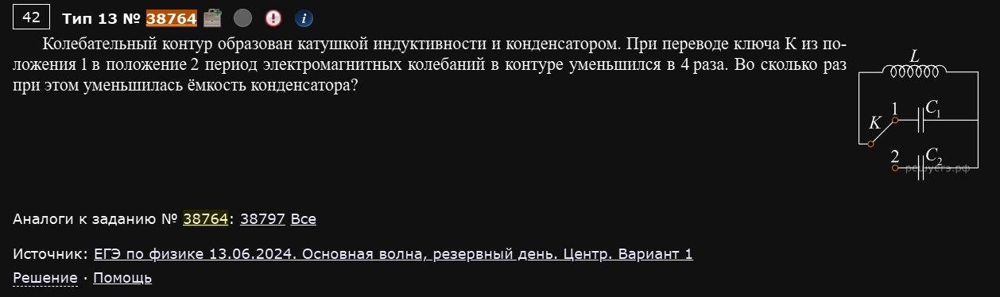
Колебательный контур образован катушкой индуктивности и конденсатором. При переводе ключа К из положения 1 в положение 2 период электромагнитных колебаний в контуре уменьшился в 4 раза. Во сколько раз при этом уменьшилась ёмкость конденсатора?
Переключение ключа меняет только конденсатор (катушка та же), так что вся зависимость — через C:
Период уменьшился в 4 раза, значит ёмкость уменьшилась в раз.
Ответ: 16.
Пример 2) (Решу ЕГЭ №38556 — ЕГЭ по физике 04.06.2024, основная волна, Дальний Восток, Москва, Сибирь, Урал, Татарстан)
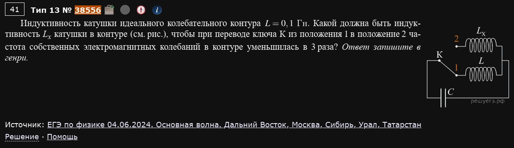
Индуктивность катушки идеального колебательного контура L = 0,1 Гн. Какой должна быть индуктивность Lx катушки в контуре (см. рис.), чтобы при переводе ключа К из положения 1 в положение 2 частота собственных электромагнитных колебаний в контуре уменьшилась в 3 раза? Ответ запишите в генри.
Здесь наоборот — меняется катушка, конденсатор общий. Частота уменьшилась в 3 раза, значит период увеличился в 3 раза:
Ответ: 0,9.
Пример 3) (Решу ЕГЭ №37895 — ЕГЭ по физике 02.04.2024, досрочная волна, Москва)
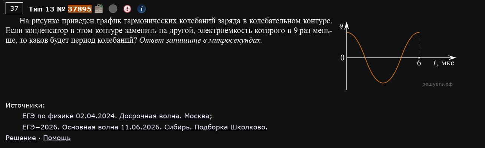
На рисунке приведен график гармонических колебаний заряда в колебательном контуре. Если конденсатор в этом контуре заменить на другой, электроемкость которого в 9 раз меньше, то каков будет период колебаний? Ответ запишите в микросекундах.
По графику период исходных колебаний мкс (полный цикл от максимума через ноль, минимум и обратно укладывается ровно в 6 мкс на оси).
Ответ: 2.
Пример 4) (Решу ЕГЭ №51365 — СтатГрад: тренировочная работа по физике 17.04.2026, вариант ФИ2510501)
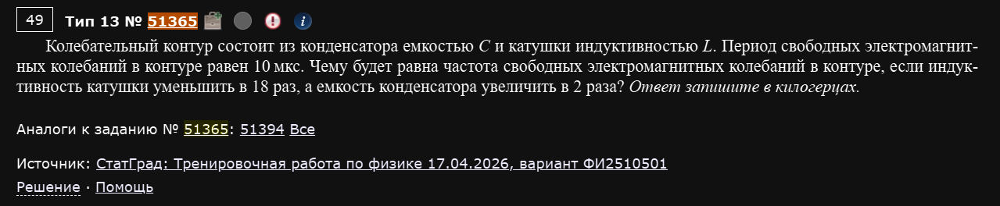
Колебательный контур состоит из конденсатора емкостью C и катушки индуктивностью L. Период свободных электромагнитных колебаний в контуре равен 10 мкс. Чему будет равна частота свободных электромагнитных колебаний в контуре, если индуктивность катушки уменьшить в 18 раз, а емкость конденсатора увеличить в 2 раза? Ответ запишите в килогерцах.
Здесь меняются сразу оба элемента — считаем произведение LC целиком:
Ответ: 300.
Пример 5) (Решу ЕГЭ №32590 — Пробный ЕГЭ по физике, Москва, 18.04.2023)
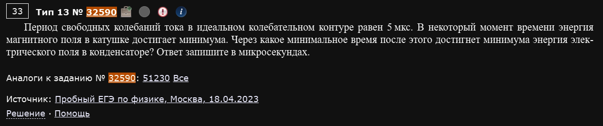
Период свободных колебаний тока в идеальном колебательном контуре равен 5 мкс. В некоторый момент времени энергия магнитного поля в катушке достигает минимума. Через какое минимальное время после этого достигнет минимума энергия электрического поля в конденсаторе?
Формат без формулы вообще — чистая логика колебаний. В идеальном контуре энергия перетекает туда-обратно между катушкой и конденсатором: когда энергия катушки (магнитного поля) минимальна (равна нулю — ток через контур в этот момент нулевой), заряд на конденсаторе в этот момент максимален, то есть энергия конденсатора максимальна. Минимума энергия конденсатора достигает четвертью периода позже (когда заряд, наоборот, обнуляется, а ток становится максимальным):
Ответ: 1,25.
Магнитная и электрическая энергия всегда сдвинуты на T/4
В любой момент, когда одна из энергий (катушки или конденсатора) достигает экстремума (минимума или максимума), вторая энергия проходит через “нейтральную” точку и достигает своего экстремума ровно через T/4. Не нужно ничего интегрировать — только считать четверти периода.
Пример 6) (Демидова 2026, вариант 29)
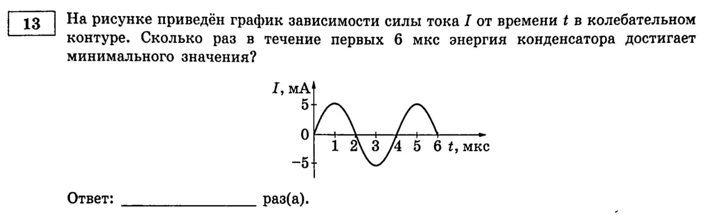
На рисунке приведён график зависимости силы тока I от времени t в колебательном контуре. Сколько раз в течение первых 6 мкс энергия конденсатора достигает минимального значения?
График — синусоида с периодом T=6 мкс (I=0 при t=0, максимум около t=1,5, ноль при t=3, минимум около t=4,5, снова ноль при t=6).
Энергия конденсатора минимальна (равна нулю), когда заряд на нём равен нулю — а это происходит ровно в те моменты, когда ток максимален по модулю (весь запас энергии контура в этот момент — в катушке). На графике за 6 мкс ток достигает своего пика (положительного или отрицательного) ровно дважды: при t≈1,5 мкс и при t≈4,5 мкс.
Ответ: 2.
Пример 7) (Демидова 2026, вариант 30)
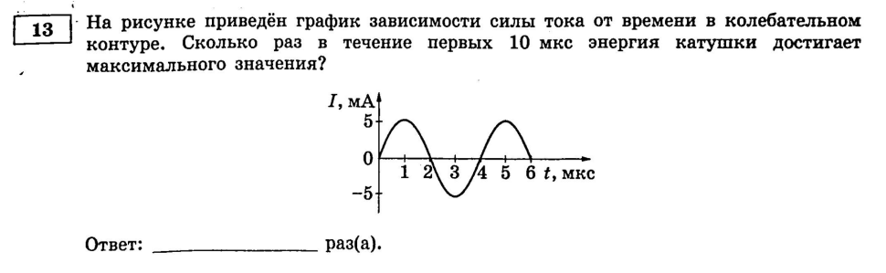
На рисунке приведён график зависимости силы тока от времени в колебательном контуре. Сколько раз в течение первых 10 мкс энергия катушки достигает максимального значения?
Тот же график (T=6 мкс), но теперь интервал длиннее (10 мкс вместо 6) и спрашивают про максимум энергии катушки — а он достигается ровно тогда же, когда ток максимален по модулю (те же самые моменты, что и в примере 6).
Пики тока за первые 10 мкс: t≈1,5, t≈4,5 и t≈7,5 мкс — все три попадают в интервал (следующий пик, t≈10,5, уже за его пределами).
Ответ: 3.
Считайте именно пики тока, а не пересечения нуля
Легко сбиться и посчитать моменты, когда ток проходит через ноль (там как раз энергия катушки минимальна, а не максимальна). Максимум энергии катушки — это всегда пик |I(t)|, то есть верхняя или нижняя точка синусоиды на графике.
Зеркала
Один факт держит всю тему
Угол падения всегда равен углу отражения — оба отсчитываются от нормали (перпендикуляра к зеркалу). Все задачи этого блока — просто разная геометрия вокруг этого факта: то в градусах, то в клетках шахматной доски.
Пример 1) (Решу ЕГЭ №41142 — СтатГрад: тренировочная работа по физике 23.01.2025, вариант ФИ2410301)
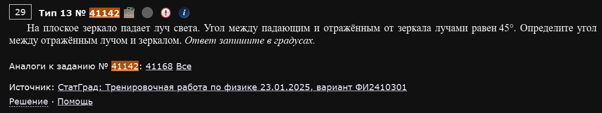
На плоское зеркало падает луч света. Угол между падающим и отражённым от зеркала лучами равен 45°. Определите угол между отражённым лучом и зеркалом.
Угол между падающим и отражённым лучами (угол отклонения) связан с углом падения от нормали θ формулой . Отсюда:
Угол между отражённым лучом и плоскостью зеркала (не нормалью!) — это дополнение до 90°:
Ответ: 22,5.
Пример 2) (Решу ЕГЭ №43195 — ЕГЭ по физике 02.06.2025, основная волна, Юг)
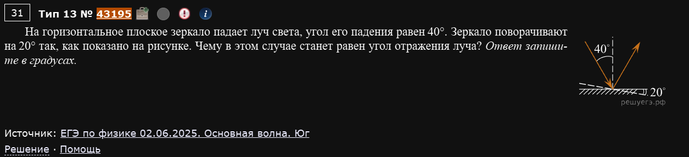
На горизонтальное плоское зеркало падает луч света, угол его падения равен 40°. Зеркало поворачивают на 20° так, как показано на рисунке. Чему в этом случае станет равен угол отражения луча? Ответ запишите в градусах.
Ключевой факт этого формата: при повороте зеркала на угол φ нормаль поворачивается на тот же угол φ, а падающий луч остаётся неподвижным. Значит, угол падения меняется ровно на φ — увеличивается или уменьшается, в зависимости от того, куда повернули зеркало. По рисунку зеркало поворачивается навстречу падающему лучу, поэтому угол падения уменьшается:
Угол отражения всегда равен углу падения — это тот же самый закон, независимо от поворота зеркала:
Ответ: 20.
Определяйте направление поворота по рисунку
В этом формате легко перепутать знак: зеркало может повернуться как навстречу лучу (угол падения уменьшается), так и от него (угол падения увеличивается на φ). Без рисунка направление не угадать — обязательно смотрите, куда именно повёрнута новая (штриховая) линия зеркала относительно старой.
Пример 3) (Решу ЕГЭ №38739 — ЕГЭ по физике 13.06.2024, основная волна, резервный день, Дальний Восток)
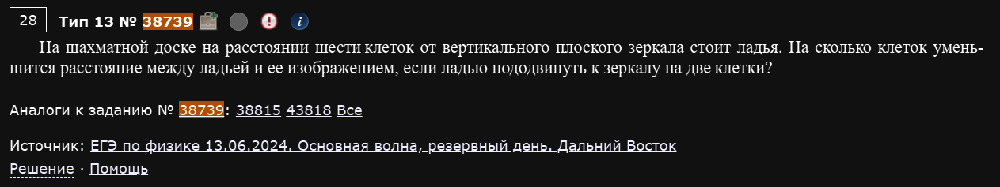
На шахматной доске на расстоянии шести клеток от вертикального плоского зеркала стоит ладья. На сколько клеток уменьшится расстояние между ладьей и её изображением, если ладью подвинуть к зеркалу на две клетки?
Изображение в плоском зеркале находится на таком же расстоянии за зеркалом, как сам предмет перед ним — значит, расстояние предмет-изображение всегда равно удвоенному расстоянию предмет-зеркало.
Ответ: 4.
Пример 4) (Решу ЕГЭ №38717 — ЕГЭ по физике 04.06.2024, основная волна, Центр)
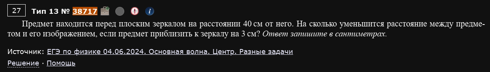
Предмет находится перед плоским зеркалом на расстоянии 40 см от него. На сколько уменьшится расстояние между предметом и его изображением, если предмет приблизить к зеркалу на 3 см? Ответ запишите в сантиметрах.
Тот же принцип, что и в примере 3, только в сантиметрах вместо клеток:
Ответ: 6.
Линзы
Два формата — формула и построение
Линзы в №13 бывают двух видов: либо чистый расчёт по формуле тонкой линзы, либо “какая из точек — изображение”, где нужно построить ход лучей на глаз. Второй формат не требует вычислений вообще — только знание правил построения.
Пример 1) (Решу ЕГЭ №39952 — СтатГрад: тренировочная работа по физике 16.10.2024, вариант ФИ2410102)
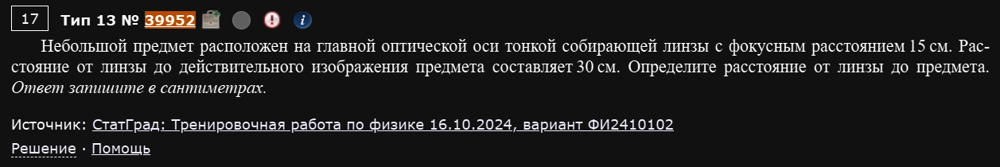
Небольшой предмет расположен на главной оптической оси тонкой собирающей линзы с фокусным расстоянием 15 см. Расстояние от линзы до действительного изображения предмета составляет 30 см. Определите расстояние от линзы до предмета. Ответ запишите в сантиметрах.
Формула тонкой линзы, выражаем расстояние до предмета d:
Ответ: 30.
Частный случай d = d' = 2F
Здесь предмет и изображение оказались на одинаковом расстоянии от линзы (по 30 см = 2F). Это не совпадение, а классический частный случай: если предмет стоит ровно в 2F, изображение всегда получается тоже в 2F по другую сторону, равное по размеру и перевёрнутое. Стоит запомнить эту точку — она часто встречается как “красивый” вариант условия.
Пример 2) (Решу ЕГЭ №38498 — ЕГЭ по физике 04.06.2024, основная волна, Урал)
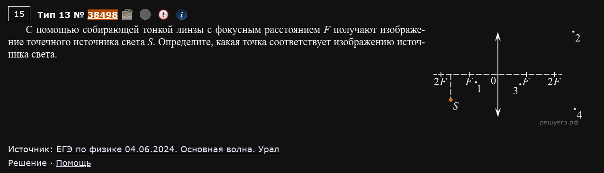
С помощью собирающей тонкой линзы с фокусным расстоянием F получают изображение точечного источника света S. Определите, какая точка соответствует изображению источника света.
Источник S расположен вне оси линзы, точно на расстоянии 2F от неё (по горизонтали) — а значит, применим тот же частный случай, что и в примере 1: изображение точечного источника всегда получается на расстоянии 2F по другую сторону линзы, только для точки вне оси оно ещё и отражается относительно оси (переворачивается).
Строится это двумя стандартными лучами: луч через оптический центр O идёт без излома; луч, параллельный оси, после линзы проходит через дальний фокус F. Точка их пересечения справа от линзы, на расстоянии 2F, по другую сторону оси от S (так как изображение перевёрнутое) — это и есть искомая точка.
Ответ: точка 2 (по нумерации точек на рисунке задачи).
Два луча — все, что нужно для построения
Для любой точки (даже не на оси) изображение строится всего двумя лучами: 1) луч через центр линзы — не преломляется; 2) луч, параллельный главной оптической оси, — после линзы идёт через фокус (или его продолжение, если источник ближе фокуса). Пересечение этих двух лучей (или их продолжений, если изображение мнимое) — и есть точка изображения.
Закон преломления Снеллиуса
Формулы есть, а реальных задач — нет
Эта подтема существует в кодификаторе и на Решу ЕГЭ (17 задач в категории), но ни одна из них не подписана как задание из реальной волны ЕГЭ или Статграда 2019 года и позднее — все либо без источника, либо из старых демоверсий. В Демидовой 2026 (все 30 вариантов) эта тема тоже ни разу не встретилась именно в позиции №13 — только как один из пунктов в качественных заданиях (выбор верных утверждений) в других номерах. Похоже, в последних циклах ЕГЭ формульные задачи на закон преломления в №13 просто не используются на практике — тему проверяют через качественные утверждения. Поэтому здесь — не примеры, а справочные формулы, на всякий случай.
где α — угол падения, β — угол преломления, — скорости света в средах 1 и 2, — их абсолютные показатели преломления ().
Полное внутреннее отражение (свет идёт из оптически более плотной среды в менее плотную) наступает при углах падения больше предельного угла :
(где среда 1 — более плотная, откуда идёт свет, среда 2 — менее плотная; если среда 2 — вакуум/воздух, то ).